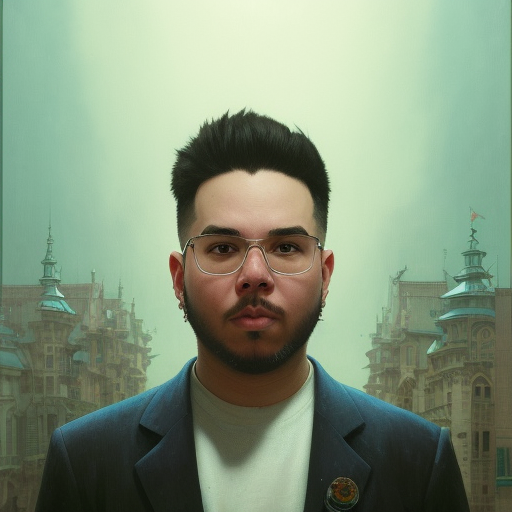

Acerca de mi
Resumen
Como apasionado de la tecnologia, comence siendo un niño curioso que ensayaba e intentaba crear de todo con lo que encontrara. Actualmente, conservo esa ilusion por descubrir, aprender, mejorar y crear, econtrar retos y superarlos. Durante los ultimos años he adquirido una notable experiencia en la programacion, soy graduado en ingenieria de sistemas y poseo conocimiento en desarrollo web y creacion de aplicaciones, desde pequeño siempre me han gustado los videojuegos y el arte, por lo cual intente mezclar un poco de lo que me gusta para alcanzar mi sueño. En el 2021 realice un curso de Diseño para la Producción Digitan en Cine y Videojuegos, ahora poseo un conocimiento en el diseño 2D y 3D, por mi cuenta estudie el arte pixel art, al cual le he brindado un tiempo de unas 600 horas y ahora mismo estoy realizando el Bootcamp Unity Presentado por Generation Colombia para ser Desarrollador Junior Unity, el cual me ayudara a afianzar mis conocimiento en el lenguaje utilizado en este motor el cual es C#, y a practicar mis habilidades artisticas al mismo tiempo, no tengo favortismo por lo cual me gusta trabajar tanto en el lado de programacion, como de arte.